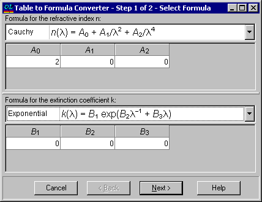
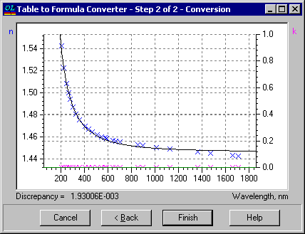

Formula from Table
At the first step of the dialog:
Select formulas for the refractive index and extinction coefficient to be used for the conversion.
The conversion is performed through a fitting procedure that seeks the best formula approximation of the tabular data.
The formula coefficients indicated in the dialog window are used as a starting point for this fitting procedure.

At the second step of the conversion dialog: 1. The best approximation of the tabular data is displayed for review. 2. If the conversion result appears satisfactory, press the Finish button to transfer the obtained formula approximation to the Materials/Substrate editor. 3. In case of unsatisfactory quality of the approximation, you can press the Back button to try another formula or adjust the starting formula parameters.
